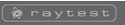

|  |
ClearPET Reconstruction |
||
Reconstruction menu:
Home
|
Welcome to ClearPET ReconstructionThis interface allows you to control image reconstructions for the ClearPET system. Use the New command in the menu to schedule a new reconstruction. Use the Status command in the menu to monitor the reconstruction progress. Use the Delete Data Sets command in the menu to delete data sets which are no more used. This only deletes the raw data files, not the reconstructed images. Use the Normalization command in the menu to perform a new normalization. This should only be used by experienced users, because a bad normalization can degrade the quality of the images significantly. The reconstruction jobs will be processed one after the other in the order of scheduling. Note: These pages work best if Javascript is enabled in your Browser. |
||